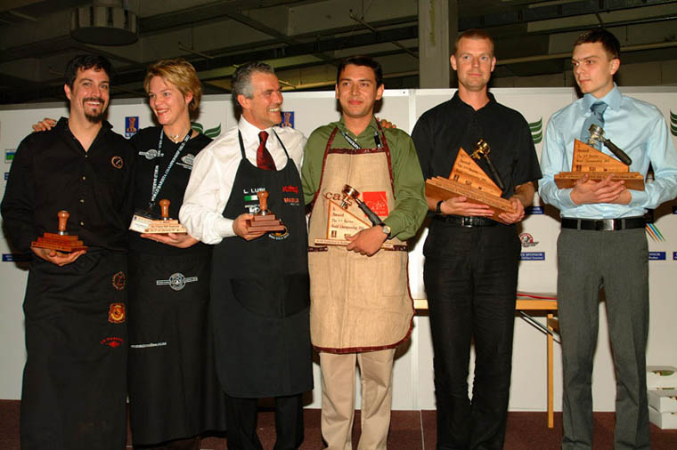
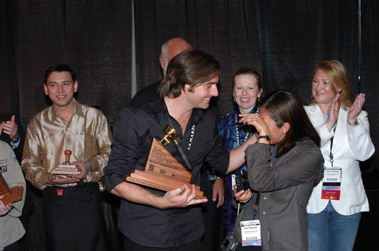

国际咖啡师大赛历史 WBC（World Barista Championship）
[导读] 中文譯文: 2000年,在蒙地卡羅,一群(對咖啡---譯者注)專注的人濟濟一堂,呈現了WBC(世界咖啡師大賽)的首屆比賽。他們的遠見締造了一個面向來自世界各 地的最優秀的咖啡師的
中文譯文: 2000年,在蒙地卡羅,一群(對咖啡---譯者注)專注的人濟濟一堂,呈現了WBC(世界咖啡師大賽)的首屆比賽。他們的遠見締造了一個面向來自世界各 地的最優秀的咖啡師的競赛平台。12个来自不同国家的选 手参与了决赛，挪威的选手ROBERT THORESEN夺冠
2003年的美國波士頓。WBC那時已經贏得空前的聲譽，賽事在美國的早間電視頻道向超過兩千萬美國人播報 （這還不包括世界的其他地區電視觀眾），賽事冠軍第一次在斯堪的納維亞人以外產生---來自澳大利亞的PAUL BASSETT以壓倒性優勢， 實至名歸和毫無爭議的從28位選手決戰中奪走桂冠。
2005年WBC東道主是西雅圖---美國的ESPRESSO COFFEE的發源地 (也是STARBUCKS的老家---譯者注）。來自35個國家派出咖啡世界級的選手奉獻出他們的完美和專業的ESPRESSO咖啡體驗的盛宴。王者又是 斯堪的納維亞人。丹麥選手第三次奪 冠---綾致 OVERDALL PAULSON征服了美國咖啡帝國的首都。
瑞士美麗的城市伯恩主辦了第七屆WBC決賽。39個國家選出的達到空前水準的冠軍選手爭奪卓有聲譽的WBC冠軍。當丹麥選手KLAUS THOMSEN在2006年的WBC決賽中最後獲勝時,達至破記錄人數的比賽現場觀眾歡呼雀躍。他那引人入勝的表演源自他「2006年極品咖啡可以存在 (產生)」的接近宗教般的信仰,和他對咖啡這樣的陳述後面的哲學-------咖啡就象交響樂,在那裡所有的「演奏者」,和在咖啡的鏈條(旋律)裡的每一 個為此工作的人,不得不為這個「奉獻一杯完美的ESPRESSO」的共同目標而同心協力。他推出的招牌特色咖啡就叫「交響樂」-----是由 ESPRESSO,PANNA COTTA和咖啡泡沫組成的三層咖啡飲料。 KLAUS是過去七屆WBC總決賽產生的第四個丹麥籍冠軍。
英文原文：
In 2000， in Monte Carlo, a group of like minded individuals got together and presented the first annual World Barista Championship. Their vision was to create a competition that showcased the best baristas from around the globe. 12 people competed from various nations and the competition was won by Robert Thoresen of Norway.
2001 saw the competition move to the USA, to the hot and steamy beach city of Miami, Florida. This time around 17 baristas came to represent their home countries and once again the winner was plucked from the north – Denmark’s Martin Hildebrandt took home the crown.
For the third annual World barista Championship we were back in Europe, as Oslo, Norway and the SCAE hosted the competition for 2002. Once again baristas from across the globe came together to battle for the title. 24 baristas worked tirelessly but the winner was once again the Scandinavian nation of Denmark. Fritz Storm blasted home to win.
The beautiful city of Berne, Switzerland, was the host of the 7th annual World Barista Championship. 39 nations were battling for the prestigious world title and the level of the competitors has never been higher. A record-breaking amount of spectators were cheering and nearly lifting the sealing when Klaus Thomsen from Denmark was awarded the 2006 world barista champion title. His spectacular performance was based on what he believed “Speciality coffee can be in the year 2006” and the philosophy behind the presentation was that coffee is like a Symphony, where all “players”, or workers in the coffee chain, has to work together and towards the same goal in order to provide a perfect cup of espresso. His signature drink called “Symphony” was a three-layer drink consisting of coffee - panna cotta, espresso and coffee foam. Klaus is the 4th Danish world barista champion out of a total of 7.
文章推荐
- 如何在家自己亲手制作冷萃咖啡
- 咖啡家族图 咖啡族谱图 Mandarin Coffee Family Tree 大图下载
- 新版 SCAA风味轮 Coffee Tasters Flavor Wheel 中英双语 大图下载
- 简单消暑，冰咖啡的不简单作法
- 韩国特有的咖啡文化
- 咖啡为什么这么香？咖啡烘培时的焦糖化与梅纳反应
- 国际咖啡师大赛历史 WBC（World Barista Championship）
- 罗布斯塔咖啡豆对比阿拉比加咖啡豆
- 意式浓缩咖啡因含量有多少？黑咖啡速 溶咖啡和茶叶等常见饮品的咖啡因含量
- 咖啡烘焙入门书籍 《咖啡自家烘焙全书》简介
人气文章
- 如何在家自己亲手制作冷萃咖啡
- 咖啡家族图 咖啡族谱图 Mandarin Coffee Family Tree 大图下载
- 新版 SCAA风味轮 Coffee Tasters Flavor Wheel 中英双语 大图下载
- 简单消暑，冰咖啡的不简单作法
- 韩国特有的咖啡文化
- 咖啡为什么这么香？咖啡烘培时的焦糖化与梅纳反应
- 国际咖啡师大赛历史 WBC（World Barista Championship）
- 罗布斯塔咖啡豆对比阿拉比加咖啡豆
- 意式浓缩咖啡因含量有多少？黑咖啡速 溶咖啡和茶叶等常见饮品的咖啡因含量
- 咖啡烘焙入门书籍 《咖啡自家烘焙全书》简介
 微博
微博